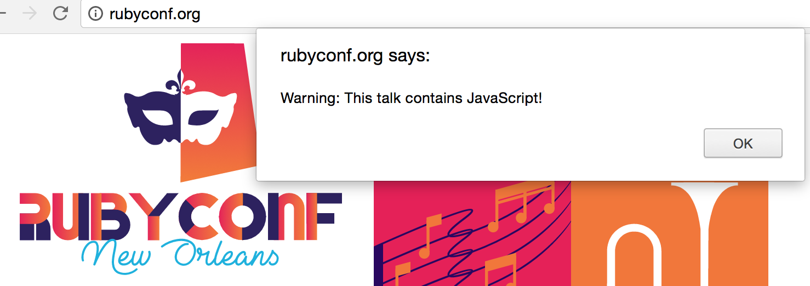
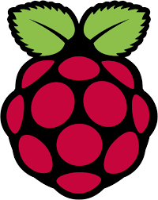

Voice Controlled
Home Automation
in Ruby
Jeff Sacks
Follow Along
- https://jrsacks.github.io/RubyVoiceControlledHomeAutomation/index.html
- Twitter: @jeff_sacks
- GitHub: jrsacks
Overview
- Questions - Interrupt at any time!
- Introduction
- Build HTTP based TV Remote
- Build Skill(s) for Amazon Echo
- Control a TV with just our voice
Twitter: @jeff_sacks
GitHub: jrsacks
DRW (Chicago)
Ruby, JavaScript, Clojure

Raspberry Pi - February 2014

TiVo March 2014
My TV Remote (2014)

TiVo App

There Must Be a Better Way

TiVo TCP Remote Protocol
COMMAND {PARAMETER} {PARAMETER}...
FORCECH 602
TELEPORT GUIDE
TELEPORT LIVETV
Sharp Aquos TCP Protocol
{COMMAND}{PARAMTER}<CR>
4 Character length Command
4 Character length Parameter
- Power: "POWR0 \r"
- Input: "IAVD3 \r"
- Volume: "VOLM18 \r"
- Mute: "MUTE2 \r"
Sinatra TV Remote Server
class TvRemoteWeb < Sinatra::Base
set :tv, EventMachine.connect(TV_IP, TV_PORT, SharpAquos)
set :tivo, EventMachine.connect(TIVO_IP, TIVO_PORT, Tivo)
get '/tv/volume/up' { settings.tv.change_volume 1 }
get '/tv/volume/down' { settings.tv.change_volume -1 }
get '/tv/volume/:vol' { |vol| settings.tv.set_volume vol.to_i }
get '/tv/mute' { settings.tv.send_command("MUTE","1") }
get '/tv/unmute' { settings.tv.send_command("MUTE","2") }
get '/tv/power/off' { settings.tv.send_command("POWR", "0") }
get '/tivo/ch/:chan' do |chan|
settings.tv.send_command("POWR", "1")
settings.tv.send_command("IAVD", "1")
settings.tivo.send_data "FORCECH #{chan}\r"
end
get '/tivo/:command/:val' { |command, val| settings.tivo.send_data "#{command} #{val}\r" }
end
TiVo EventMachine Connection Class
class Tivo < EventMachine::Connection
def receive_data(data)
puts "Tivo: #{data}"
end
def unbind
puts "Tivo: Disconnected"
reconnect TIVO_IP, TIVO_PORT
end
end
TV EventMachine Connection Class
class SharpAquos < EventMachine::Connection
def post_init
@volume = nil
@timer = EM::PeriodicTimer.new(1) do
send_data "VOLM? \r" if @volume.nil?
end
end
def receive_data(data)
puts "SharpAquos: #{data}"
unless data.match(/ERR/) or data.match(/OK/)
@volume = data.to_i
end
end
def unbind
puts "TV: Disconnected"
reconnect TV_IP, TV_PORT
end
def send_command(command, val)
if command.length == 4
val += " " while val.length < 4
send_data "#{command}#{val}\r"
end
end
def change_volume(delta)
@volume += delta
send_command("VOLM", @volume.to_s)
end
def set_volume(volume)
@volume = volume
change_volume(0)
end
end
My Remote (2015)
My Remote In March
Amazon Echo
- Alexa, What's your birthday?
- Alexa, What's the weather for tomorrow?
- Alexa, What time is it?
- Alexa, Who was the 23rd president?
- Alexa, How old is Tom Brady?
- Alexa, Tell a joke.
Echo Fun Facts
June 25, 2015 Alexa Skills Kit Released
Write your own skill (app) for Alexa
Over 25,000 published skills
Over 15 million Echo devices sold
Jeopardy, Shopping List, Timers, Weather, My TV
What Is Alexa?

Custom Skill
| AWS Lambda | Self Hosted Web Service |
|---|---|
| No Compute Resources To Manage | Server to Manager |
| No SSL Cert | Requires SSL |
| AWS Access Control/Security | DIY Access Control/Security |
| Java, C#, Python, JavaScript | Anything at all |
| Free |
Hello World
Alexa, open the greeter
AWS Lambda Function:
exports.handler = function (event, context) {
context.succeed({
version: "1.0",
response: {
outputSpeech: {
type: "PlainText",
text: "Hello Ruby Conf. I'm glad this demo worked!"
},
shouldEndSession: true
}
});
}
Ruby In Lambda
- Ruby Binary - Traveling Ruby (Linux x86_64)
- Shell out to execute ruby binary
- Package it all together in a zip file
- Upload to S3 or via Lambda web UI
Hello World In Ruby
Alexa, open the Ruby greeter
var exec = require('child_process').exec;
exports.handler = function(event, context) {
exec("./lib/ruby/bin/ruby hello_world.rb", function(error, stdout, stderr) {
context.succeed(JSON.parse(stdout));
});
};
require 'json'
STDOUT.puts({
version: "1.0",
response: {
outputSpeech: {
type: "PlainText",
text: "Hello from Ruby."
},
shouldEndSession: true
}
}.to_json)
Interaction Model
Utterances
RepeatName To say {name}
Intents
{
"intents": [
{
"intent": "RepeatName",
"slots": [{"name":"name","type":"AMAZON.US_FIRST_NAME"}]
}
]
}
Skill Setup Part 1

Skill Setup Part 2
Repeater Skill
Alexa, tell the repeater to say ...
require 'json'
event = JSON.parse(ARGV[0])
name = event["request"]["intent"]["slots"]["name"]["value"]
STDOUT.puts({
version: "1.0",
response: {
outputSpeech: {
type: "PlainText",
text: "I heard you say #{name}."
},
shouldEndSession: true
}
}.to_json)
AWS Simple Queue Service (SQS)
- SendMessage
- ReceiveMessage
- DeleteMessage
Listening to AWS SQS:
require 'aws-sdk'
options = {
:queue_url => ENV["SQS_QUEUE"],
:max_number_of_messages => 1,
:wait_time_seconds => 20
}
Aws::SQS::Client.new(region: 'us-east-1')
.receive_message(options)
.messages.each { |m| puts m.body }
Alexa, tell the message sender to say...
$LOAD_PATH.unshift(File.dirname(__FILE__))
require 'aws-sigv4'
require 'net/http'
require 'json'
def send_to_sqs(key, secret, queue, message)
url = queue + "?Action=SendMessage&MessageBody=#{URI.encode_www_form_component(message)}"
signer = Aws::Sigv4::Signer.new(
service: 'sqs',
region: queue.split('.')[1],
access_key_id: key,
secret_access_key: secret
)
signed_url = signer.presign_url(http_method: "GET", url: url)
uri = URI.parse(queue)
https = Net::HTTP.new(uri.host, uri.port)
https.use_ssl = true
request = Net::HTTP::Get.new(signed_url)
https.request(request)
end
key = ENV["KEY"]
secret = ENV["SECRET"]
queue = ENV["SQS_QUEUE"]
event = JSON.parse(ARGV[0])
name = event["request"]["intent"]["slots"]["name"]["value"]
send_to_sqs(key, secret, queue, name)
STDOUT.puts({
version: "1.0",
response: {
outputSpeech: {
type: "PlainText",
text: "I heard you say #{name}."
},
shouldEndSession: true
}
}.to_json)
TV Remote Intents
{
"intents": [
{"intent": "ChangeChannel",
"slots": [{"name": "Channel","type": "LIST_OF_CHANNELS"}]},
{ "intent": "Off"},
{ "intent": "VolUp"},
{ "intent": "VolDown"},
{ "intent": "VolSet",
"slots": [{"name":"Volume","type":"AMAZON.NUMBER"}]},
{ "intent": "Back"},
{ "intent": "Mute"},
{ "intent": "UnMute"}
]
}
Custom Slot Types
LIST_OF_CHANNELS CBS | NBC | ABC | WGN | FOX | ESPN | ESPN2 | CSN | BTN...
TV Remote Utterances
Off turn off
ChangeChannel turn on {Channel}
ChangeChannel change to {Channel}
VolUp turn up the volume
VolUp make it louder
VolUp be louder
VolDown turn down the volume
VolDown make it softer
VolDown make it quieter
VolSet set the volume to {Volume}
VolSet make the volume {Volume}
Back switch back
Back switch to the last channel
Back go back
Mute mute
UnMute unmute
TV Skill
$LOAD_PATH.unshift(File.dirname(__FILE__))
require 'aws-sigv4'
require 'net/http'
require 'json'
def send_to_sqs(key, secret, queue, message)
url = queue + "?Action=SendMessage&MessageBody=#{URI.encode_www_form_component(message)}"
signer = Aws::Sigv4::Signer.new(
service: 'sqs',
region: queue.split('.')[1],
access_key_id: key,
secret_access_key: secret
)
signed_url = signer.presign_url(http_method: "GET", url: url)
uri = URI.parse(queue)
https = Net::HTTP.new(uri.host, uri.port)
https.use_ssl = true
request = Net::HTTP::Get.new(signed_url)
https.request(request)
end
def lookup_channel(val)
return val.to_s if val.to_i > 0
channels = {
"cbs" => 602, "nbc" => 605, "abc" => 607,
"wgn" => 609, "fox" => 612, "espn" => 681,
"espn2" => 682
}
channels[val.downcase].to_s
end
key = ENV["KEY"]
secret = ENV["SECRET"]
queue = ENV["SQS_QUEUE"]
event = JSON.parse(ARGV[0])
intent = event["request"]["intent"]
intent_name = intent["name"]
commands = {
"Off" => "/tv/power/off",
"VolUp" => "/tv/volume/up",
"VolDown" => "/tv/volume/down",
"Mute" => "/tv/mute",
"UnMute" => "/tv/unmute",
"Back" => "/tivo/IRCODE/ENTER",
"VolSet" => "/tv/volume/",
"ChangeChannel" => "/tivo/ch/"
}
responses = {
"Off" => "Now Turning off the TV",
"VolUp" => "Turning Volume Up",
"VolDown" => "Turning Volume Down",
"Mute" => "Muting",
"UnMute" => "Unmuting",
"Back" => "Switching Back",
"VolSet" => "Changing the volume to ",
"ChangeChannel" => "Changing the channel to "
}
command = commands[intent_name]
alexa_response = responses[intent_name]
if intent_name == "VolSet"
volume = intent["slots"]["Volume"]["value"].to_s
command += volume
alexa_response += volume
end
if intent_name == "ChangeChannel"
channel = intent["slots"]["Channel"]["value"]
channel_number = lookup_channel(channel)
command += channel_number
alexa_response += channel_number
end
send_to_sqs(key, secret, queue, command)
STDOUT.puts({
version: "1.0",
response: {
outputSpeech: {
type: "PlainText",
text: alexa_response
},
shouldEndSession: true
}
}.to_json)
Connecting SQS to the Remote
#!/usr/bin/env sh
set -e
while true; do
ruby sqs_listener.rb | xargs -I{} curl http://127.0.0.1:4567{}
done